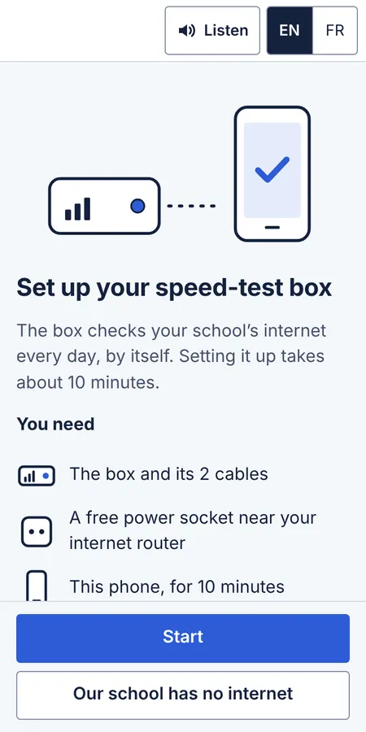
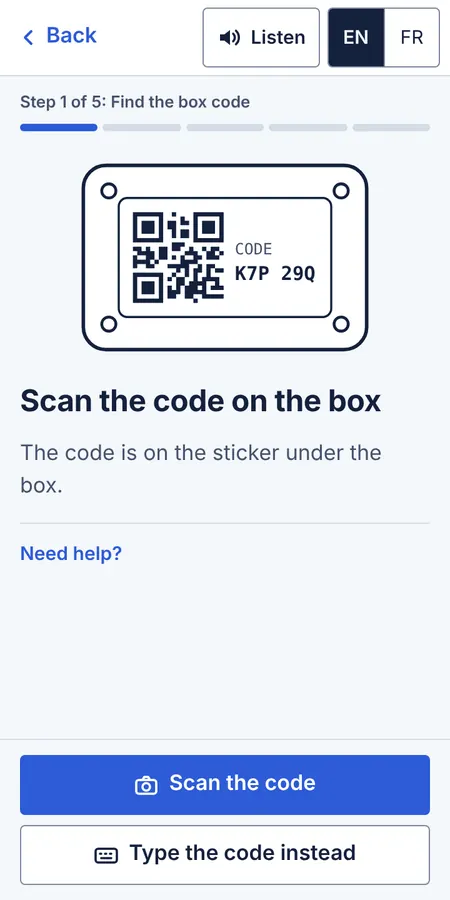
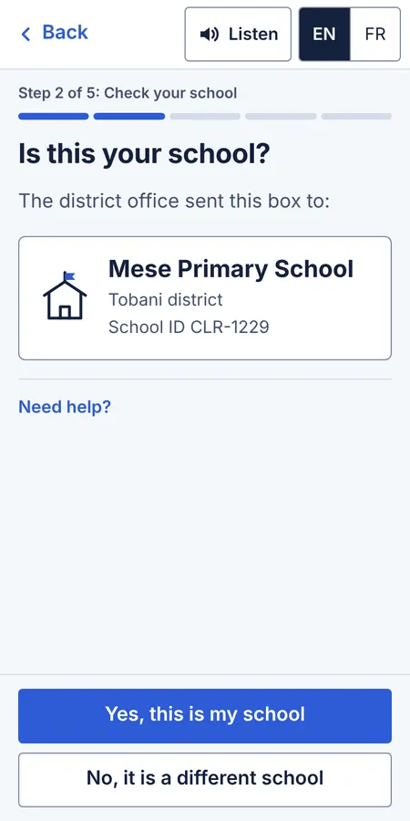
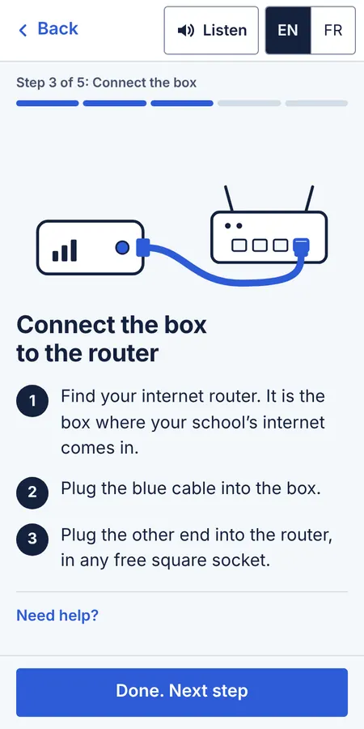
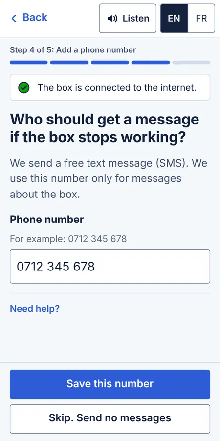
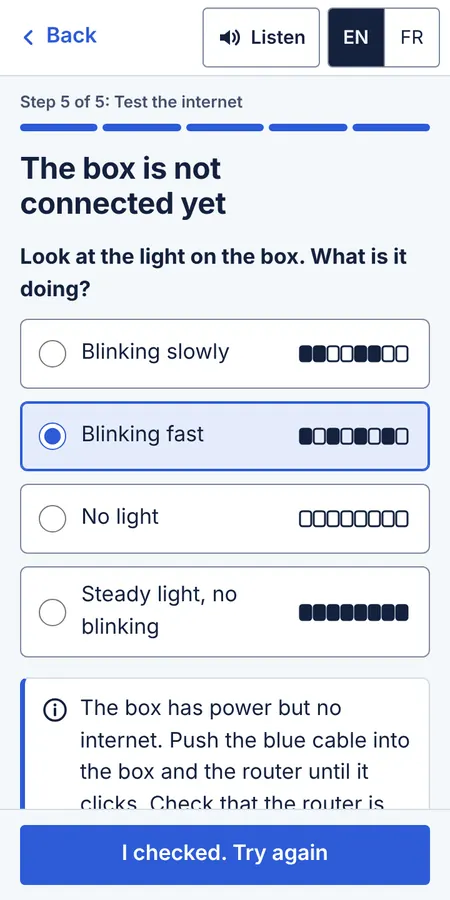
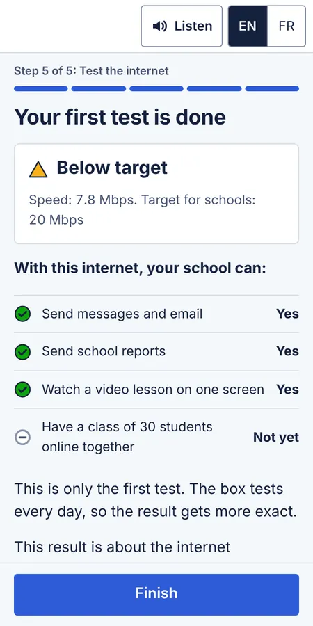
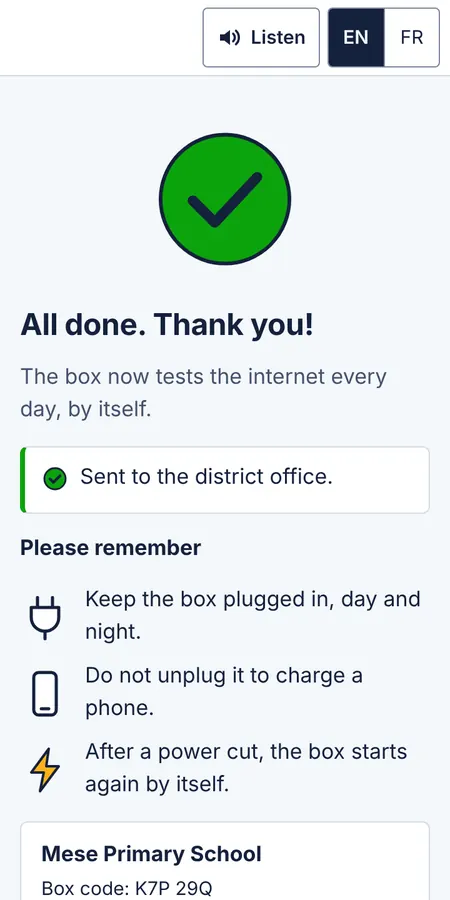

A phone flow that lets school staff set up a speed-test box on their own. It is designed for people who read little, pay for every megabyte and use a cheap Android phone.
Concept and clickable prototype, not yet tested with users
Languages
English and French
About the research. I have not spoken to school staff yet. The personas and the journey below are hypotheses built from the problem and its constraints, and they are labelled as such. The usability-test plan at the end is how I would check them.
1The problem
My first project, Classroom Signal, shows which schools in a region have usable internet. In its sample data, 15 of 128 schools have no speed test: nobody knows whether they are online at all. A school only gets a speed test when someone at the school sets up a test device.
That person is not a technician. It is usually a head teacher, a teacher or a caretaker who is busy, may not read the official language easily, and uses a cheap phone with prepaid data. If the setup is confusing, the box stays in its packaging and the school stays “unknown” on the map.
Goal: someone who has never seen the box can set it up alone, on their own phone, in about 10 minutes, typing nothing longer than a short code.
Constraints
Low literacy
Short sentences in everyday words, one instruction per step and a picture for every physical action. Icons always come with words, and a “Listen” button reads the screen aloud.
Low bandwidth
No app to install: one small page with no web fonts, photos or trackers, and drawings made in code. Answers are saved on the phone until there is signal to send them.
A cheap Android phone
Designed for a 360 × 720 screen, Chrome on Android Go, a slow processor and little free storage. Touch targets are 48 px, there is no heavy animation, and the back button goes to the previous step.
2Who it is for
Three hypothetical personas. They are not real people and are not based on interviews; they record my assumptions so the tests can prove them wrong.
N
Neema, head teacher
Primary school, Tobani district
Hypothetical persona
Context
No IT staff. The router is in her office. Power cuts most weeks.
Phone and data
Entry-level Android, storage nearly full, data bought in small bundles.
Reading
Confident in the local language; reads English or French slowly.
Wants
To set the box up once, correctly, and show the district it is done.
Worries
Breaking something, spending her own data, being blamed for a slow result.
So the design must
Never ask for things she does not know, explain in plain words, and survive interruptions.
S
Samuel, ICT teacher
Secondary school, Dasaro district
Hypothetical persona
Context
Looks after the computer lab and helps colleagues with technology.
Phone and data
Mid-range Android, comfortable with apps.
Reading
Reads English and French well.
Wants
The real numbers, and to know whether the lab can go online.
Worries
Flows that hide details and leave him unable to fix problems.
So the design must
Offer details on request and give real troubleshooting steps, without slowing others down.
J
Joseph, caretaker
Primary school, Ruvazi district
Hypothetical persona
Context
Often the one at school when deliveries arrive, and may plug in the box when the head teacher is away.
Phone and data
Basic Android shared with family; uses voice calls and voice messages more than text.
Reading
Reads short words and numbers; prefers pictures and listening.
Wants
To do what he was asked without making a mistake.
So the design must
Show a picture for every physical step, read aloud, and need no typing beyond a code.
3Neema’s journey
From the day the box arrives to the weeks after setup. The feelings are my guesses, to be checked in the tests. The curve above the stages shows the same feelings as the words below it.
The box arrives
Doing
Signs for a parcel from the district office.
Thinking
“What is this for? Will it cost the school money?”
Feeling
Unsure
Design response
A one-page picture guide in the box says what it is, that it is free, and shows the code to scan.
Getting ready
Doing
Looks for the router and a free power socket.
Thinking
“The only socket in the office is used by the fridge.”
Feeling
Worried
Design response
The first screen lists what is needed. Progress is saved, so she can stop and come back.
Opening the setup
Doing
Scans the code on the box with her phone camera.
Thinking
“Will this use up my data?”
Feeling
Cautious
Design response
A small web page, no app. Typing the code is offered if the camera fails.
Checking the school
Doing
Sees her school’s name and district.
Thinking
“Yes, that is us.”
Feeling
Reassured
Design response
The box is assigned before it is sent, so she recognises the school instead of typing an ID.
Connecting
Doing
Plugs in the network cable, then the power.
Thinking
“Which hole does this go in?”
Feeling
Unsure, then relieved
Design response
One picture per step, everyday words, and a light that tells her it is starting.
Waiting
Doing
Waits about 2 minutes for the box to start.
Thinking
“Is it working?”
Feeling
Impatient
Design response
The wait is used to ask for a phone number, with a live status line.
First result
Doing
Sees the first speed test.
Thinking
“Is our school bad?”
Feeling
Anxious, then calmer
Design response
Shows what the school can do, not only Mbps, and says the result is about the connection.
Weeks later
Doing
Someone unplugs the box to charge a phone.
Thinking
“Nobody told me it must stay on.”
Feeling
Unaware
Design response
The last screen and the box label say “keep it plugged in”, and an SMS goes out after 2 days offline.
4Design principles
The journey turned into six rules that every screen is checked against.
Ask only what the system cannot know. The district already knows which school each box goes to, so people confirm a name instead of typing an ID.
One action per step, with a picture. People follow these steps with a cable in one hand.
Use waiting time. The box takes about 2 minutes to start; the flow asks its only question during that wait.
Say what the number means. “7.8 Mbps” becomes a list of things the school can and cannot do yet.
Never leave people stuck. Every error says what to do next, and help is in the same place on every screen.
Respect the data bundle. One small page, no app, and progress saved on the phone.
5Low-fidelity sketches
I sketched the flow as grey boxes first, then reviewed each screen against the principles above and Nielsen’s usability heuristics. The review was my own, not feedback from users. These six screens changed the most.
Identifying the school
Problem I found
Asks for a school ID and district that staff may not know, and four fields to type on a small keyboard.
Changed to
The district assigns each box to a school before sending it. People scan the code and confirm a school name they recognise.
When the school is wrong
Problem I found
Letting anyone pick another school could register a box to the wrong school, and wrong data on the map is worse than none.
Changed to
“No, it is a different school” stops the setup and says who to call, with the box code in large type.
Connecting the box
Problem I found
Three small pictures and a long block of text: hard to follow with a cable in one hand.
Changed to
Two steps, each with one large picture and up to three numbered sentences.
Waiting for the box
Problem I found
Two minutes with nothing to do, and no way to tell a slow start from a broken box.
Changed to
The wait is used to ask for a phone number. A status line shows when the box connects, and “It is taking too long” leads to a check.
Checking the light
Problem I found
Colour names fail for colour-blind people and in bright sun, and the box would need a light with several colours.
Changed to
One light, described by how it blinks. Each answer shows the pattern as a strip of on and off moments.
The first result
Problem I found
“7.8 Mbps” means little to most staff, and “Slow” sounds like a judgement of the school.
Changed to
A list of everyday tasks the school can or cannot do yet, the status shape from Classroom Signal, and a note that the result is about the connection.
6High-fidelity screens
The final screens use the shared design system: the same colour tokens, type scale, buttons and status shapes as Classroom Signal, with controls raised to 48 px for touch.

Welcome

Find the code

Is this your school?

Connect the cable

Phone number, while the box starts

Light check

First result

Done
7The clickable prototype
Open the prototype on a phone, or on a computer, where the design notes for each screen appear beside it. The camera scan, the box and the speed test are simulated, and waits of minutes take seconds.
Switch scenarios: the box needs a fix first, the first test meets or misses the target, or the phone has no signal at the end.
Try the second path, “Our school has no internet”, which records the school as having no connection instead of leaving it unknown.
Switch to French, press “Listen”, or reload half-way to see the saved progress.
8Design decisions
Decision
Why
A web page opened from the code on the box, not an app
Installing an app costs data and storage that a cheap phone may not have. The page is one file with no downloads after it opens.
Box codes use 6 characters and never O, 0, I or 1
Characters that look alike cause typing errors. The field also accepts spaces, dashes and small letters.
“No, it is a different school” stops the setup
A box registered to the wrong school puts wrong data on the map, which is worse than no data. The district fixes the assignment.
The light check asks about the blinking pattern, not the colour
Colour names fail for colour-blind people and in bright sun (WCAG 1.4.1), and a one-colour light makes the box cheaper.
The phone number is optional, and the button says what skipping means
Collect the least personal data. People who skip still finish setup; they just get no alerts.
The result uses Classroom Signal’s status shape and words
School staff and district staff should describe a school the same way: “Below target” means the same thing on both screens.
Each step has its own address in the browser history
On Android, the system back button then goes to the previous step instead of closing the flow.
“Listen” uses the phone’s built-in voice
Reading aloud helps people who read little, and the built-in voice needs no audio files or network.
French copy follows French typography
Spaces before “:” and “?” do not break, so a lone “?” never starts a new line on a narrow screen.
9Accessibility (WCAG 2.2 AA)
Target size (2.5.8): every control is at least 48 px tall, twice the minimum.
Consistent help (3.2.6): “Need help?” is in the same place on every screen.
Redundant entry (3.3.7): nothing is asked twice; the school comes from the box code.
Accessible authentication (3.3.8): no passwords; the code can be scanned instead of typed.
Focus not obscured (2.4.11): the page leaves room above the fixed button bar, so a focused field is never hidden behind it.
Error identification (3.3.1, 3.3.3): errors appear next to the field, are linked to it for screen readers and say how to fix the problem.
Status messages (4.1.3): “The box is connected” is announced without moving focus.
On each new screen, focus moves to its heading and the page title names the step.
Light and dark themes come from the shared tokens; animation stops when the system asks for reduced motion.
10Usability-test plan Planned, not yet run
This is how I would test the prototype. Nothing below has happened yet, and there are no results.
What I want to learn
Can school staff set up the box alone, using only the phone flow?
Do people with limited reading confidence understand each step, with and without “Listen”?
Do people understand what the first result means for their school?
Participants
Six people from schools with weak connections, found through the district office: two head teachers, two teachers (one who looks after computers), and two non-teaching staff. At least two should say they do not read English or French with confidence. Each would receive airtime as thanks, following local practice and district approval.
Setup
In person at the participant’s own school, with a real box or a mock-up with a working light, using the participant’s own phone on their usual connection. A moderator who speaks the participant’s language runs the session, and an observer takes notes. Each session lasts about 40 minutes. With consent, only the phone screen is recorded, never faces.
Tasks
Task (what the moderator says)
Success looks like
“This box arrived from the district. Please set it up.”
Reaches the end without help in about 12 minutes, with the cables in the right sockets.
A box addressed to another school is handed over.
Notices the wrong school name and does not set the box up.
The box is unplugged from the router before the session.
Uses the light check to find and fix the cable.
“Can your school stream a video lesson with this connection?”
Answers correctly from the result screen.
The moderator interrupts half-way and returns 5 minutes later.
Finds the place again from the saved progress.
What I would measure
Task completion without help, time per task, wrong turns and requests for help.
Ease of each task on a five-face picture scale, an adaptation of the Single Ease Question that does not depend on reading.
Whether people press “Listen”, and whether it helps them.
Mobile data used by the page on the participant’s phone.
Consent and data
Consent is read aloud in the participant’s language, and people can stop at any time. Notes use participant numbers, not names. Recordings are deleted once the analysis is done.
Analysis and next round
List every problem seen, rate it from 0 (not a problem) to 4 (stops the task), fix the most serious ones, then test again with three new people. A one-session pilot with a friend who is not a designer comes first, to check the script and timings.
When the design is ready to build
At least 5 of 6 people finish the setup without help.
Nobody sets up a box that was sent to another school.
The median setup time is 12 minutes or less.
At least 5 of 6 people answer the result question correctly.
Open questions the tests should answer
Is there usually a free socket on the router, and a power socket near it?
Can the camera apps on the cheapest phones read the code?
Will schools on metered connections accept a daily test that uses some of their data?
11What I would do next
Run the test plan, starting with the pilot.
Add a status to Classroom Signal for schools that report having no connection, separate from “No speed test”.
Translate into the main local languages and record the “Listen” text with human voices where the built-in voice is poor.
Read the code with the camera in the browser where the phone supports it, and cache the page for offline use.
12How it is built
The prototype is one HTML file of about 67 KB (22 KB compressed) with plain HTML, CSS and JavaScript and no framework or build step. Each step has its own address in the browser history, progress is kept in the phone’s local storage, and “Listen” uses the browser’s speech synthesis. Colours, type and components come from the same design-system file as Classroom Signal. The drawings are inline SVG coloured by theme tokens, so they follow light and dark mode. The screenshots on this page load only when you scroll to them.